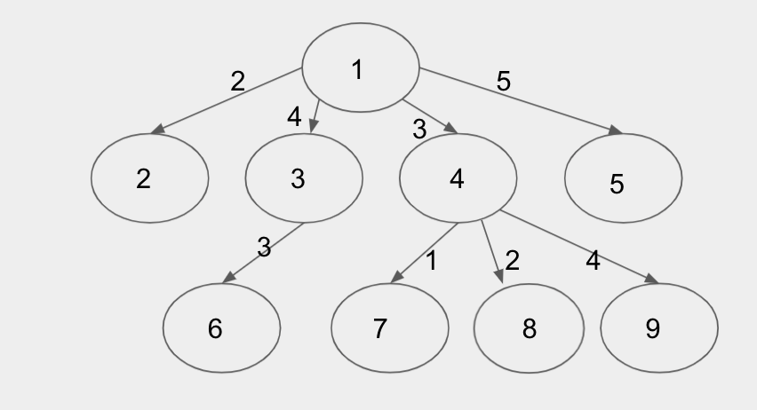

There is exactly one way to get from one interesting sight to another using these transportation methods without using any transportation method more than once. So the set of interesting places and modes of transportation is an unrooted tree.
For Test Set 1, the limits are small enough to calculate visit time for every order in which we can visit the sights. Each of the order corresponds to one permutation of the numbers $$$1$$$ to $$$\mathbf{N}$$$, and there are $$$\mathbf{N}!$$$ such permutations.
Once we have fixed the order we will visit the sights, we simply need to compute the distance from the first sight to the second, the second to the third, and so on until we reach the end point. The distance between two sights can be computed in many different ways. For example, with Floyd-Warshal algorithm or running BFS or DFS $$$\mathbf{N}$$$ times. Note that you can precompute all of these distances beforehand rather than re-computing them every time. Each of the mentioned algorithm has a polynomial runtime. So, time to precompute is $$$O(\mathbf{N}^2)$$$ or $$$O(\mathbf{N}^3)$$$ for each permutation. Thus, the total time complexity is $$$O(\mathbf{N} \times \mathbf{N}!)$$$, which is sufficient for Test Set 1.
For Test Set 2, we need a more efficient approach. From this point onwards, we will call the set of sights and the transportation methods in the input tree, where the sights are its nodes and the transportation methods are its edges.
Let us consider a fixed starting node $$$S$$$ and the tree as rooted with $$$S$$$ as its root. There are $$$\mathbf{N}$$$ choices for $$$S$$$ and we will try them all. Our solution traverses the rooted tree top-down, while trying to minimise the total cost. While traversing, the path will go only once into each subtree. Going back to any subtree after visiting it once will never be optimal. The upper bound of the cost of visiting a rooted tree is $$$2 \times \sum(\mathbf{C_i})$$$ (think about traversing in DFS fashion, starting from and ending at the root). If any path goes more than once into any subtree, it will result additional cost.
One interesting observation is that the cost of visiting a subtree rooted at any node depends on which of the child subtrees will be visited last. For example, if we have four child subtrees of the root, and we have decided which subtree to visit last, the total cost will be the same, regardless of which order we decide to visit the first three subtrees. In order to visit all of the nodes, we must return to the root every time we finish traversing each subtree, except the last one, to be able to move to the next one.
However, this observation is not true for all subtrees. When we are at a subtree that doesn't have the starting point as the root, the cost of visiting the subtree depends on another factor, that is, whether this subtree was chosen as the last one to be visited from its parent or not.
If it was not the last one, then we need to go back to the parent, so the cost will be constant in the rooted tree, no matter what order we visit the subtrees.
If it was the last one, then the traversal can end at any node, it doesn't need to go back to the parent. In that case, the ordering of visiting subtrees will matter.

In the example picture of a graph above, the cost of visting all the places if we start from node $$$1$$$ will depend on which of the four child subtrees we are visiting last. Then, when we visit any child subtree, we also need to consider whether that subtree is the last one visited from its parent $$$1$$$, or not.
From the above observations, we can formulate a recurrence to find the optimal cost. Let's denote the cost function as $$$F(x)$$$ for a subtree rooted at $$$x$$$, and it has been selected as the last child subtree during the traversal from its parent, and $$$F_1 (x)$$$, when it has not been selected as the last one. Then we can have,
$$$$F(x) = \min_{y \in Ch(x)}\left(F(y) + E(x, y) + \sum_{z \in Ch(x) \setminus \{y\}} (2 \times E(x, z) + F_1 (z))\right)$$$$ Here,
$$$F_1 (x)$$$ is a constant function for a given weighted tree and fixed root. Since the starting and ending nodes are the same, all the edge costs in the subtree rooted at $$$x$$$ will be included in the total cost twice. We can precompute these values for a fixed root.
We can try all the nodes as a starting point. For each of them, we can calculate the cost using the recurrence. At each node $$$x$$$, we will have at most $$$O(degree(x))$$$ options to chose the last child subtree. However, the total number of choices are $$$\sum(degree(\mathbf{N}))$$$, which is $$$O(\mathbf{N})$$$ for a tree.
By using memorisation, we can make sure the function $$$F(x)$$$ and $$$F_1(x)$$$ is being calculated only once per node.
We can avoid running the inner loop to calculate the sum $$$\sum_{z \in Ch(x) \setminus \{y\}} (2 \times E(x, z) + F_1 (z))$$$ for every choice of $$$y$$$ by calculating the sum $$$\sum_{z \in Ch(x)} (2 \times E(x, z) + F_1 (z))$$$ at the beginning of the loop, and for every $$$y$$$, subtracting $$$2 \times E(x, y) + F_1 (y)$$$ from it.
These techniques enable us to execute the calculations for each choice in constant time. We have $$$O(\mathbf{N})$$$ options for starting points. Hence, the total time complexity becomes $$$O(\mathbf{N}^2)$$$, which is sufficient for Test Set 2.
There's another approach to solve this problem. Let's think about any walk that that visits all the places, has starting place $$$\mathbf{S}$$$, and ending place $$$\mathbf{T}$$$. Let's consider extending this path to also walk back from $$$\mathbf{T}$$$ to $$$\mathbf{S}$$$ at the end. The length of such enclosed path is exactly distance($$$\mathbf{S}$$$, $$$\mathbf{T}$$$) longer than the length of the walk. But note that all enclosed paths that touch every node require a cost of at least $$$2 \times \sum(\mathbf{C_i})$$$ since we have to go "down" and "up" every edge. Thus, the optimal enclosed path is to use $$$2 \times \sum(\mathbf{C_i})$$$. Then to find the cheapest walk, we want to subtract off the largest distance($$$\mathbf{S}$$$, $$$\mathbf{T}$$$), which is exactly the longest path in the tree.
The longest path in a tree can be found in $$$O(\mathbf{N})$$$ time using two cleverly selected DFSs. Alternatively, we can simply run $$$\mathbf{N}$$$ DFSs, one from each node, to find the distance between every pair of nodes, then take the maximum, giving us an $$$O(\mathbf{N}^2)$$$ algorithm. Hence, the total time complexity becomes $$$O(\mathbf{N})$$$ or $$$O(\mathbf{N}^2)$$$, which is sufficient for Test Set 2.